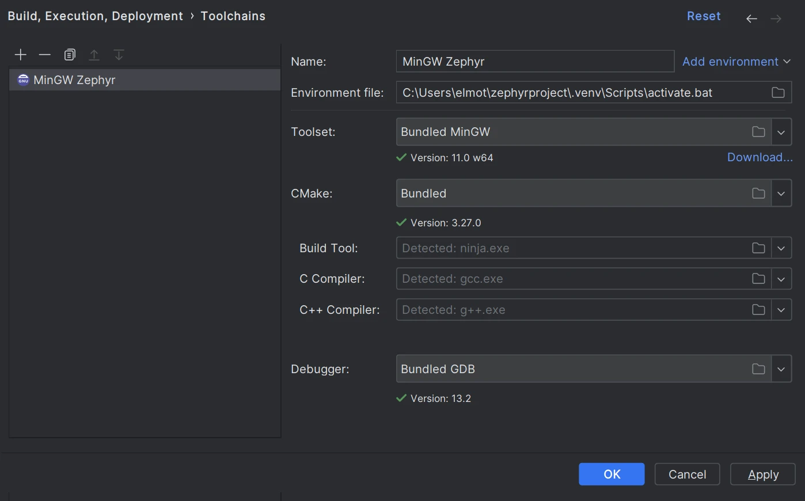

CLion
备注
本指南介绍如何借助 CLion 的 CMake 集成，在 CLion 中设置、构建和调试 Zephyr 的示例应用程序。这种方法已不再是最佳选择。
CLion 现已提供 native Zephyr West integration，能以更简单、更直观的方式打开、构建和运行/调试 Zephyr 项目。本指南将很快更新，但如果你更喜欢使用 CMake，它仍然适用。
CLion 是一款跨平台的 C/C++ IDE，支持多线程 RTOS 调试。
本指南介绍在 CLion 中设置、构建和调试 Zephyr Basic thread manipulation 示例的过程。
这些说明已在 Windows 上测试过。就 CLion 的工作流而言，macOS 和 Linux 上的步骤相同，但请确保选择正确的环境文件并调整路径。
获取 CLion
Download CLion 并安装。
初始化新的工作区
本指南详细介绍如何构建和调试 Basic thread manipulation 示例应用程序，但对于任何 Zephyr 项目和 工作区布局，步骤都是类似的。
开始之前，请按照 入门指南 中的说明，确保已有可用的 Zephyr 开发环境。
在 CLion 中打开项目
在 CLion 中，点击欢迎界面上的 Open，或从主菜单选择 。
导航到你的 Zephyr 工作区（如果按照入门指南操作，即主目录下的
zephyrproject文件夹），然后选择zephyr/samples/basic/threads或其他示例项目文件夹。点击 OK。
如有提示，点击 Trust Project。
关于项目安全的更多信息，请参阅 CLion 网页帮助中的 Project security 一节。
配置工具链和 CMake 配置文件
CLion 会打开带有 CMake 配置文件设置的 Open Project Wizard。如果没有打开，请进入 。
点击 Toolchain 字段旁边的 Manage Toolchains。这会打开 Toolchain 设置对话框。
建议在 Windows 上使用默认设置的 Bundled MinGW 工具链，在 Unix 机器上使用 System（默认）工具链。
点击 ，然后选择
..\.venv\Scripts\activate.bat。
点击 Apply 保存更改。
回到 CMake 配置文件设置对话框，在 CMake options 字段中指定开发板。例如：
-DBOARD=nrf52840dk/nrf52840

点击 Apply 保存更改。
CMake 加载应当会成功完成。

配置用于调试的 Zephyr 参数
在右上角的配置切换器中选择 guiconfig，然后点击锤子图标。
使用该图形界面应用程序设置以下标志：
DEBUG_THREAD_INFO THREAD_RUNTIME_STATS DEBUG_OPTIMIZATIONS
构建项目
在配置切换器中选择 zephyr_final，然后点击锤子图标。
注意，此时也可以调用 puncover 或 hardenconfig 等其他 CMake 目标。
启用 RTOS 集成
进入 。
勾选 Enable RTOS Integration 复选框。
该选项会在调试期间启用 Zephyr 任务视图。更多信息请参阅 CLion 网页帮助中的 Multi-threaded RTOS debug。
可以将该选项保留为 Auto。CLion 会自动检测 Zephyr。
创建 Embedded GDB Server 配置
要在 CLion 中调试 Zephyr 应用程序，需要基于 Embedded GDB Server 模板创建一个运行/调试配置。
下面的说明以 Nordic Semiconductor 开发板和 Segger J-Link 调试探针为例。如果你的环境不同，请相应地调整配置设置。
从主菜单选择 。
配置以下设置：
选项
值
Name（可选）
Zephyr-threads
GDB Server Type
Segger JLink
Location
Windows 上
JLinkGDBServerCL.exe的路径，或 macOS/Linux 上JLinkGDBServer二进制文件的路径。Debugger
Bundled GDB
备注
对于非 ARM、非 x86 架构，请使用 Zephyr SDK 中的 GDB 可执行文件。确保选择支持 Python 的版本（例如 riscv64-zephyr-elf-gdb-py），并检查系统
PATH中是否有 Python。Target
zephyr-final
Executable binary
zephyr-final
Download binary
Always
TCP/IP port
Auto

点击 Next 设置 Segger J-Link 参数。

准备就绪后点击 Create。
开始调试
点击代码行左侧的边栏设置断点。
确保在配置切换器中选中了 Zephyr-threads，然后点击虫子图标或按 Ctrl+D。
命中断点时，CLion 会打开 Debug 工具窗口。
Zephyr 任务列在 Threads & Variables 窗格中。可以在它们之间切换，并查看每个任务的变量。
关于该 IDE 调试功能的详细说明，请参阅 CLion web help。